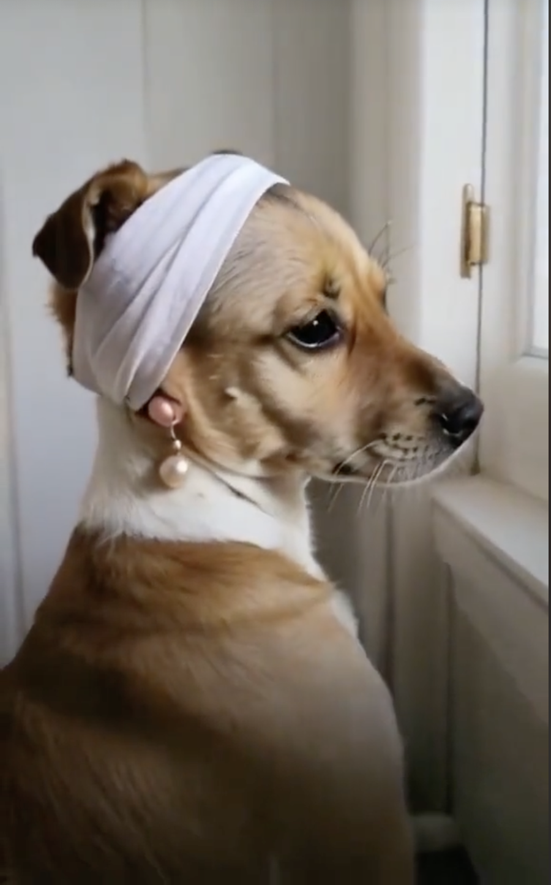

Baños:

Contamos con un equipo capacitado para dar un baño correcto a las mascotas, el cual se enfatiza en el aseo de
las partes mas importantes de nuestro can, como las orejas, patas, panza y zona trasera. Utilizamos los
productos de calidas y adecuados para el tipo de cabellera que cuente tu mascota, para así garantizar un
correcto baño, dejando a tu fiel compañero fresco, contento y cómodo
Cortes:

Nuestro equipo de estilistas cuentan con una gran experiencia laboral en el ámbito canino, ellos pueden
llevar a cabo cualquier corte que nuestro cliente desee para su cachorro. Las herramientas de trabajo de
nuestro equipo son de la major calidad, ademas de que cuentan con las mejores practicas de aseo, lo que
asegura que tu can no contraiga enfermedades de piel y conserve un corte único.
SPA:

En nuestro proximo servicio de spa para perros tu mascota podrá disfrutar de una experiencia relajante, la
cual abaraca un baño premiun en el cual se utilizarán productos según su tipo de pelo, seguido de un masaje
relajante en el que se busca reducir el estres y mejorar la circulación y finalmente una limpieza profunda
de orejas y corte de uñas con presición.Todo lo anterior realizado en un ambiente tranquilo y cómodo pensado
para que tu mejor amigo se sienta consentido.